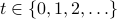

Raphaël Berthier
BrieflyI am a postdoc under the supervision of Emmanuel Abbe and Andrea Montanari. Before that, I was a PhD student under the supervision of Francis Bach and Pierre Gaillard. My PhD thesis is a parallel study of optimization and gossip algorithms. The best way to learn about this is to look at the summary at the beginning of the manuscript. Here is a short CV. Contact
|
Publications and Preprints
R. Berthier. Incremental Learning in Diagonal Linear Networks, 2022, preprint.
[arXiv] [Show Abstract]Abstract: Diagonal linear networks (DLNs) are a toy simplification of artificial neural networks; they consist in a quadratic reparametrization of linear regression inducing a sparse implicit regularization. In this paper, we describe the trajectory of the gradient flow of DLNs in the limit of small initialization. We show that incremental learning is effectively performed in the limit: coordinates are successively activated, while the iterate is the minimizer of the loss constrained to have support on the active coordinates only. This shows that the sparse implicit regularization of DLNs decreases with time. This work is restricted to the underparametrized regime with anti-correlated features for technical reasons.
R. Berthier, M. B. Li. Acceleration of Gossip Algorithms through the Euler-Poisson-Darboux Equation, 2022, accepted for publication in Information and Inference: a Journal of the IMA.
[arXiv] [Show Abstract]Abstract: Gossip algorithms and their accelerated versions have been studied exclusively in discrete time on graphs. In this work, we take a different approach, and consider the scaling limit of gossip algorithms in both large graphs and large number of iterations. These limits lead to well-known partial differential equations (PDEs) with insightful properties. On lattices, we prove that the non-accelerated gossip algorithm of Boyd et al. [2006] converges to the heat equation, and the accelerated Jacobi polynomial iteration of Berthier et al. [2020] converges to the Euler-Poisson-Darboux (EPD) equation - a damped wave equation. Remarkably, with appropriate parameters, the fundamental solution of the EPD equation has the ideal gossip behaviour: a uniform density over an ellipsoid, whose radius increases at a rate proportional to t - the fastest possible rate for locally communicating gossip algorithms. This is in contrast with the heat equation where the density spreads on a typical scale of . Additionally, we provide simulations demonstrating that the gossip algorithms are accurately approximated by their limiting PDEs.
C. Gerbelot, R. Berthier. Graph-based Approximate Message Passing Iterations, 2021, preprint.
[arXiv] [Show Abstract]Abstract: Approximate-message passing (AMP) algorithms have become an important element of high-dimensional statistical inference, mostly due to their adaptability and concentration properties, the state evolution (SE) equations. This is demonstrated by the growing number of new iterations proposed for increasingly complex problems, ranging from multi-layer inference to low-rank matrix estimation with elaborate priors. In this paper, we address the following questions: is there a structure underlying all AMP iterations that unifies them in a common framework? Can we use such a structure to give a modular proof of state evolution equations, adaptable to new AMP iterations without reproducing each time the full argument ? We propose an answer to both questions, showing that AMP instances can be generically indexed by an oriented graph. This enables to give a unified interpretation of these iterations, independent from the problem they solve, and a way of composing them arbitrarily. We then show that all AMP iterations indexed by such a graph admit rigorous SE equations, extending the reach of previous proofs, and proving a number of recent heuristic derivations of those equations. Our proof naturally includes non-separable functions and we show how existing refinements, such as spatial coupling or matrix-valued variables, can be combined with our framework.
M. Even, R. Berthier, F. Bach, N. Flammarion, P. Gaillard, H. Hendrikx, L. Massoulié, A. Taylor. A Continuized View on Nesterov Acceleration for Stochastic Gradient Descent and Randomized Gossip, 2021, oustanding paper award and oral at Advances in Neural Information Processing Systems (NeurIPS).
[conference version, arXiv] [Show Abstract]Abstract: We introduce the continuized Nesterov acceleration, a close variant of Nesterov acceleration whose variables are indexed by a continuous time parameter. The two variables continuously mix following a linear ordinary differential equation and take gradient steps at random times. This continuized variant benefits from the best of the continuous and the discrete frameworks: as a continuous process, one can use differential calculus to analyze convergence and obtain analytical expressions for the parameters; and a discretization of the continuized process can be computed exactly with convergence rates similar to those of Nesterov original acceleration. We show that the discretization has the same structure as Nesterov acceleration, but with random parameters. We provide continuized Nesterov acceleration under deterministic as well as stochastic gradients, with either additive or multiplicative noise. Finally, using our continuized framework and expressing the gossip averaging problem as the stochastic minimization of a certain energy function, we provide the first rigorous acceleration of asynchronous gossip algorithms.
R. Berthier, F. Bach, P. Gaillard. Tight Nonparametric Convergence Rates for Stochastic Gradient Descent under the Noiseless Linear Model, 2020, Advances in Neural Information Processing Systems (NeurIPS).
[conference version, hal, arXiv] [Show Abstract]Abstract: In the context of statistical supervised learning, the noiseless linear model assumes that there exists a deterministic linear relation between the random output and the random feature vector , a potentially non-linear transformation of the inputs
and the random feature vector , a potentially non-linear transformation of the inputs  . We analyze the convergence of single-pass, fixed step-size stochastic gradient descent on the least-square risk under this model. The convergence of the iterates to the optimum
. We analyze the convergence of single-pass, fixed step-size stochastic gradient descent on the least-square risk under this model. The convergence of the iterates to the optimum  and the decay of the generalization error follow polynomial convergence rates with exponents that both depend on the regularities of the optimum and of the feature vectors . We interpret our result in the reproducing kernel Hilbert space framework; as a special case, we analyze an online algorithm for estimating a real function on the unit interval from the noiseless observation of its value at randomly sampled points. The convergence depends on the Sobolev smoothness of the function and of a chosen kernel. Finally, we apply our analysis beyond the supervised learning setting to obtain convergence rates for the averaging process (a.k.a. gossip algorithm) on a graph depending on its spectral dimension.
and the decay of the generalization error follow polynomial convergence rates with exponents that both depend on the regularities of the optimum and of the feature vectors . We interpret our result in the reproducing kernel Hilbert space framework; as a special case, we analyze an online algorithm for estimating a real function on the unit interval from the noiseless observation of its value at randomly sampled points. The convergence depends on the Sobolev smoothness of the function and of a chosen kernel. Finally, we apply our analysis beyond the supervised learning setting to obtain convergence rates for the averaging process (a.k.a. gossip algorithm) on a graph depending on its spectral dimension.
R. Berthier, F. Bach, P. Gaillard. Accelerated Gossip in Networks of Given Dimension using Jacobi Polynomial Iterations, 2020, SIAM Journal on Mathematics of Data Science (SIMODS).
[journal, hal, arXiv] [Show Abstract]Abstract: Consider a network of agents connected by communication links, where each agent holds a real value. The gossip problem consists in estimating the average of the values diffused in the network in a distributed manner. We develop a method solving the gossip problem that depends only on the spectral dimension of the network, that is, in the communication network set-up, the dimension of the space in which the agents live. This contrasts with previous work that required the spectral gap of the network as a parameter, or suffered from slow mixing. Our method shows an important improvement over existing algorithms in the non-asymptotic regime, i.e., when the values are far from being fully mixed in the network. Our approach stems from a polynomial-based point of view on gossip algorithms, as well as an approximation of the spectral measure of the graphs with a Jacobi measure. We show the power of the approach with simulations on various graphs, and with performance guarantees on graphs of known spectral dimension, such as grids and random percolation bonds. An extension of this work to distributed Laplacian solvers is discussed. As a side result, we also use the polynomial-based point of view to show the convergence of the message passing algorithm for gossip of Moallemi & Van Roy on regular graphs. The explicit computation of the rate of the convergence shows that message passing has a slow rate of convergence on graphs with small spectral gap.
R. Berthier, A. Montanari, P.-M. Nguyen. State Evolution for Approximate Message Passing with Non-Separable Functions, 2017, Information and Inference: a Journal of the IMA.
[journal, arXiv] [Show Abstract]Abstract: Given a high-dimensional data matrix , Approximate Message Passing (AMP) algorithms construct sequences of vectors , , indexed by  by iteratively applying or , and suitable non-linear functions, which depend on the specific application. Special instances of this approach have been developed –among other applications– for compressed sensing reconstruction, robust regression, Bayesian estimation, low-rank matrix recovery, phase retrieval, and community detection in graphs. For certain classes of random matrices , AMP admits an asymptotically exact description in the high-dimensional limit , which goes under the name of ‘state evolution.’
Earlier work established state evolution for separable non-linearities (under certain regularity conditions). Nevertheless, empirical work demonstrated several important applications that require non-separable functions. In this paper we generalize state evolution to Lipschitz continuous non-separable nonlinearities, for Gaussian matrices . Our proof makes use of Bolthausen's conditioning technique along with several approximation arguments. In particular, we introduce a modified algorithm (called LAMP for Long AMP) which is of independent interest.
or , and suitable non-linear functions, which depend on the specific application. Special instances of this approach have been developed –among other applications– for compressed sensing reconstruction, robust regression, Bayesian estimation, low-rank matrix recovery, phase retrieval, and community detection in graphs. For certain classes of random matrices , AMP admits an asymptotically exact description in the high-dimensional limit , which goes under the name of ‘state evolution.’
Earlier work established state evolution for separable non-linearities (under certain regularity conditions). Nevertheless, empirical work demonstrated several important applications that require non-separable functions. In this paper we generalize state evolution to Lipschitz continuous non-separable nonlinearities, for Gaussian matrices . Our proof makes use of Bolthausen's conditioning technique along with several approximation arguments. In particular, we introduce a modified algorithm (called LAMP for Long AMP) which is of independent interest.
PhD thesis
R. Berthier. Analysis and Acceleration of Gradient Descents and Gossip Algorithms, 2021, manuscript.